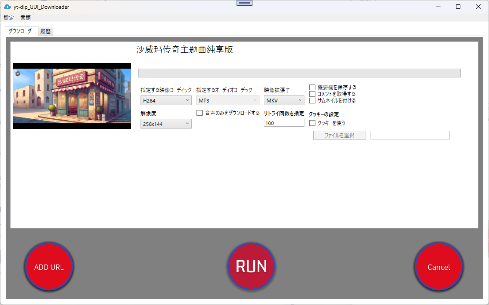
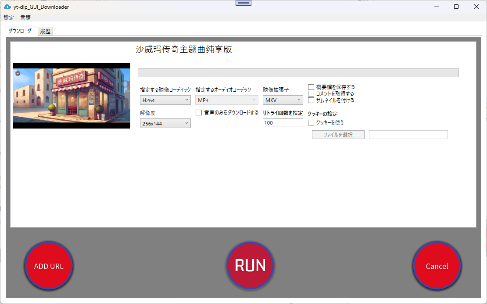

概要
yt-dlp.exe を簡単に操作できるGUIツールです。
 GitHubはこちらダウンロード
ダウンロードFAQ
指定したコーデックが反映されない場合
対応するコーデックを確認し、VP9またはAV1を選択してください。
プレイリスト全体のダウンロード
可能です。YouTubeで動作確認済みです。
ライセンス
MIT License. 詳細はGitHubリポジトリをご確認ください。
yt-dlp.exe を簡単に操作できるGUIツールです。
 GitHubはこちら対応するコーデックを確認し、VP9またはAV1を選択してください。
可能です。YouTubeで動作確認済みです。
MIT License. 詳細はGitHubリポジトリをご確認ください。